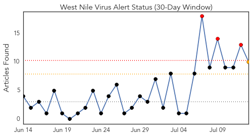
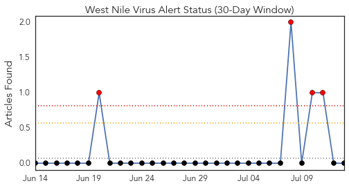
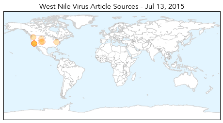
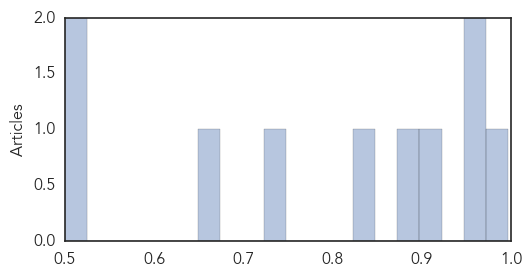

Toggle navigation
Early Warning
Daily Alerts
West Nile Virus
Jul 13, 2015
Compare to:
-
Dengue Fever
Hemmorhagic Fever
Mold/Fungal Infection
Influenza
Meningitis
Pertussis / Whooping Cough
Middle East Respiratory Syndrome
Cholera
Hepatitis
Chikungunya
Yellow Fever
Bubonic Plague
Swine Flu
Ebola
Measles
Unknown
Mumps
30 Day Trends
Web: 3
alerts
, 1
warnings
Twitter: 4
alerts
, 0
warnings
Top Articles:
0.996
NY health officials warn of mosquito risk
0.957
West Nile virus spreads: Is California drought to blame?
0.956
California drought responsible for spreading of West Nile virus
0.903
Amid rainy summer, Ohio urges precautions against mosquitoes
0.884
West Nile Virus threat looms over DeKalb County
0.825
Season’s first West Nile virus case confirmed in Wyoming
0.741
Monsoons could bring more mosquitoes
0.666
Man Paralyzed By West Nile Virus Wants Cities To Be Proactive « CBS Denver
0.524
Weld County health officials: West Nile virus found in mosquitoes
0.500
5 Signs the Historic Drought Is Getting Much Worse
Top Tweets:
No tweets found for Jul 13, 2015
Web/News Articles

Tweets

Article Locations

Article Confidences
